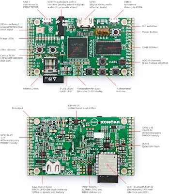

I first learned about the ULX3S via the Hackaday Article last month. (see also hackster.io) There was an offer for boards at the bottom of the radiona.org ulx3s page, so I promptly contacted them. There was only one 12F board left (I confirmed mine is the latest v3.0.3 version), and without the ESP32 connected. Goran was so kind: he not only soldered on the ESP32, but he also included a sticker, headers, the SPI display, and even an awesome 3D-Printed case! (for those that follow me - you know my ongoing quest to find good enclosures
for projects)
My board arrived all the way from Croatia, and just in time for the weekend! Power-on success is always a good start:
One of the first things I noticed is that there are TWO micro-USB ports:
|
 |
| ULX3S Board Diagram, from http://radiona.org/ulx3s/ |
One of them is used for JTAG, connected to a FTDI FT231XS chip. The other is "connected directly to FPGA". Despite having reviewed the online documentation prior to board arrival, I admit I was surprised to see the two USB connectors. (Uh-oh; which do I use?? will there be ground-loop problem if I use them both?) The feature list
only names the one used for JTAG, but both are of course clearly labeled on the diagram (see above); Interesting how one sees things differently when actually holding the physical item.
There are a bunch of interesting links for the
ulx3s here
.
I received a suggestion that I should first test board with this repo:
github.com/emard/ulx3s-bin
There's some information on using JTAG with the ULX3S
here: github.com/emard/ulx3s-bin
.
My board came with what appeared to be a preloaded WiFi AP (source code should be
this one
). Goran also suggested that:
for using web interface you will need passthru sample; with ujprog you will program this file and you use -j FLASH option
:
{% include code_header.html %}
ujprog -j FLASH passthru_ulx3s_v20_12k.bit
then power off board. Power on with SD card with config file and it will connect to your network then you can use web interface to upload sram.svf files to SD card and program then from WEB interface or use buttons and OLED
.
(I didn't actually do this yet)
To use the WiFi AP, a file called
ulx3s-wifi.conf
should be placed on a fat32 formated SD card:
{% include code_header.html %}
{
"host_name": "ULX3S",
"ssid": "MyMagicSSID",
"password": "WiFiPassWord8675309",
"http_username": "user",
"http_password": "pass"
}
I installed an 8GB SD card that I had used for a Raspberry Pi (I left all the RPi files) - but it did not seem to be used when I connected to the ESP32 AP. I was unable to connect with Windows 10. It seemed to see there was a "problem" in that there was no internet connectivity (duh). I had more success with my phone, connecting to the address shown on the SPI display:
http://192.168.1.4.1/
- however I was not prompted for a WiFi password, nor a username / password. I suspect somehow the SD card was not detected / not used.
The tools include a
forked version of OpenOCD (oddly, no PR's accepted, no ability to open issues). Heads up that some fetches are from https://repo.or.cz/
(not sure why everything is not hosted on GitHub, this certainly makes PR's a bit less convenient - but no issue if not accepted anyhow). I built mine for some JTAG devices I had on hand, as I was not sure what "auto" meant (install if found? install everything?).
{% include code_header.html %}
sudo apt-get install make libtool pkg-config autoconf automake texinfo libusb-1.0-0-dev
git clone https://github.com/emard/openocd.git ulx32_OpenOCD
cd ulx32_OpenOCD
./bootstrap
./configure --prefix=/home/$USER/workspace --enable-ftdi --enable-ft232r --enable-stlink --enable-usb-blaster --enable-jlink --enable-buspirate
make
sudo make install
So ok, that didn't initially work for me. I ended up with this "error: libusb-1.x is required for the MPSSE mode of FTDI based devices
" message:
{% include code_header.html %}
...
checking whether to build a release... no
checking whether to build Doxygen as HTML... yes
checking whether to build Doxygen as PDF... no
checking whether to enable verbose JTAG I/O messages... no
checking whether to enable verbose USB I/O messages... no
checking whether to enable verbose USB communication messages... no
checking whether to enable malloc free space logging... no
checking whether to enable ZY1000 minidriver... no
checking whether to enable dummy minidriver... no
checking whether standard drivers can be built... yes
checking for LIBUSB1... no
configure: WARNING: libusb-1.x not found, trying legacy libusb-0.1 as a fallback; consider installing libusb-1.x insteadchecking for LIBUSB0... yes
checking for HIDAPI... no
checking for HIDAPI... no
checking for HIDAPI... no
checking for LIBFTDI... no
checking for LIBFTDI... yes
checking for LIBJAYLINK... no
configure: error: libusb-1.x is required for the MPSSE mode of FTDI based devices
The solution was to install libusb-1.0-0-dev. (added, above to apt-get install; many thanks to daveshah1
for that tip) Afterwards, all was well:
{% include code_header.html %}
Enabled transports:
- USB ............................ yes
- TCP ............................ yes
OpenOCD configuration summary
--------------------------------------------------
MPSSE mode of FTDI based devices yes
ST-Link JTAG Programmer yes
TI ICDI JTAG Programmer yes (auto)
Keil ULINK JTAG Programmer yes (auto)
Altera USB-Blaster II Compatible yes (auto)
Bitbang mode of FT232R based devices yes
Versaloon-Link JTAG Programmer yes (auto)
TI XDS110 Debug Probe yes (auto)
OSBDM (JTAG only) Programmer yes (auto)
eStick/opendous JTAG Programmer yes (auto)
Andes JTAG Programmer yes (auto)
USBProg JTAG Programmer yes (auto)
Raisonance RLink JTAG Programmer yes (auto)
Olimex ARM-JTAG-EW Programmer yes (auto)
CMSIS-DAP Compliant Debugger no
Cypress KitProg Programmer no
Altera USB-Blaster Compatible yes
ASIX Presto Adapter yes (auto)
OpenJTAG Adapter yes (auto)
SEGGER J-Link Programmer yes
Despite the
instructions, @emard commented on gitter
:
Don't use my openocd, it's obsolete (I should remove). Use latest mainstream OpenOCD, they included my patch
That fork of OpenOCD was from
github.com/ntfreak/openocd
Unfortunately, I was
once again reminded that USB devices are not supported on WSL
. For instance:
{% include code_header.html %}
$ lsusb -t
/sys/bus/usb/devices: No such file or directory
Although I was able to get around this with the TinyFPGA that could use either USB or TTY drivers, OpenOCD does not. It uses only USB drivers. So I ended up downloading a pre-built binary for OpenOCD on Windows
. That didn't initially work either - as the default drivers that Windows installed were the FTDI ones:
As the error appeared that OpenOCD was looking for the libusb drivers:
{% include code_header.html %}
GNU MCU Eclipse 64-bit Open On-Chip Debugger 0.10.0+dev-00462-gdd1d90111 (2019-01-18-11:42)
Licensed under GNU GPL v2
For bug reports, read
http://openocd.org/doc/doxygen/bugs.html
Info : only one transport option; autoselect 'jtag'
FT232R num: TCK = 5 DSR
FT232R num: TMS = 6 DCD
FT232R num: TDI = 7 RI
FT232R num: TDO = 3 CTS
FT232R num: TRST = 2 RTS
FT232R num: SRST = 4 DTR
adapter speed: 1000 kHz
Error: libusb_open() failed with LIBUSB_ERROR_NOT_SUPPORTED
Error: ft232r not found: vid=0403, pid=6015, serial=[any]
Zadig to the rescue once again, forcing a change to the drivers to libusbK:
This worked! OpenOCD found the Lattice FPGA:
{% include code_header.html %}
GNU MCU Eclipse 64-bit Open On-Chip Debugger 0.10.0+dev-00462-gdd1d90111 (2019-01-18-11:42)
Licensed under GNU GPL v2
For bug reports, read
http://openocd.org/doc/doxygen/bugs.html
Info : only one transport option; autoselect 'jtag'
FT232R num: TCK = 5 DSR
FT232R num: TMS = 6 DCD
FT232R num: TDI = 7 RI
FT232R num: TDO = 3 CTS
FT232R num: TRST = 2 RTS
FT232R num: SRST = 4 DTR
adapter speed: 1000 kHz
Info : clock speed 1000 kHz
Info : JTAG tap: lfe5u12.tap tap/device found: 0x21111043 (mfg: 0x021 (Lattice Semi.), part: 0x1111, ver: 0x2)
Warn : gdb services need one or more targets defined
TapName Enabled IdCode Expected IrLen IrCap IrMask
-- ------------------- -------- ---------- ---------- ----- ----- ------
0 lfe5u12.tap Y 0x21111043 0x21111043 8 0x05 0xff
open("bitstream.svf"): No such file or directorysvf svf [-tap device.tap]
[quiet] [nil] [progress] [ignore_error]
xsvf (tapname|'plain') filename ['virt2'] ['quiet']
I ran OpenOCD like this, as decribed in the docs:
{% include code_header.html %}
openocd.exe --file=ft231x.ocd --file=ecp5-XXf.cfg
with the contents of ft231x.ocd
:
{% include code_header.html %}
interface ft232r
ft232r_vid_pid 0x0403 0x6015
# ULX3S specific GPIO setting
ft232r_tck_num DSR
ft232r_tms_num DCD
ft232r_tdi_num RI
ft232r_tdo_num CTS
# trst/srst are not used but must have different values than above
ft232r_trst_num RTS
ft232r_srst_num DTR
adapter_khz 1000
and ecp5-XXf.cfg
:
{% include code_header.html %}
telnet_port 4444
gdb_port 3333
# JTAG TAPs
jtag newtap lfe5u12 tap -expected-id 0x21111043 -irlen 8 -irmask 0xFF -ircapture 0x5
#jtag newtap lfe5u25 tap -expected-id 0x41111043 -irlen 8 -irmask 0xFF -ircapture 0x5
#jtag newtap lfe5u45 tap -expected-id 0x41112043 -irlen 8 -irmask 0xFF -ircapture 0x5
#jtag newtap lfe5u85 tap -expected-id 0x41113043 -irlen 8 -irmask 0xFF -ircapture 0x5
init
scan_chain
svf -tap lfe5u12.tap -quiet -progress bitstream.svf
shutdown
Make the
ujprog
(ULX2S / ULX3S JTAG programmer)
{% include code_header.html %}
git clone https://github.com/f32c/tools.git f32c_tools
cd f32c_tools/ujprog
cp Makefile.linux Makefile
make
Usage for
ujprog
programmer:
{% include code_header.html %}
ULX2S / ULX3S JTAG programmer v 3.0.92 (built Feb 8 2019 15:32:33)
Usage: ujprog [option(s)] [bitstream_file]
Valid options:
-p PORT Select USB JTAG / UART PORT (default is 0)
-P TTY Select TTY port (valid only with -t or -a)
-j TARGET Select bitstream TARGET as SRAM (default) or FLASH (XP2 only)
-f ADDR Start writing to SPI flash at ADDR, optional with -j flash
-s FILE Convert bitstream to SVF FILE and exit
-r Reload FPGA configuration from internal Flash (XP2 only)
-t Enter terminal emulation mode after completing JTAG operations
-b SPEED Set baudrate to SPEED (300 to 3000000 bauds)
-e FILE Send and execute a f32c (MIPS/RISCV) binary FILE
-x SPEED Set binary transfer speed, optional with -e
-a FILE Send a raw FILE
-d debug (verbose)
-D DELAY Delay transmission of each byte by DELAY ms
-q Suppress messages
Make the
ftx-prog
programmer:
{% include code_header.html %}
git clone https://github.com/richardeoin/ftx-prog.git
cd ftx-prog
make
Usage for
ftx-prog
:
{% include code_header.html %}
ftx_prog: version 0.2
Modified for the FT-X series by Richard Meadows
Based upon:
ft232r_prog: version 1.23, by Mark Lord.Usage: ftx_prog [
]..
where
must be any of:
--help # (show this help text)
--dump # (dump eeprom settings to stdout)
--verbose # (show debug info and raw eeprom contents)
--save <file> # (save original eeprom contents to file)
--restore <file> # (restore initial eeprom contents from file)
--8bit-strings # (byte strings)
--cbus [1..7] [Tristate|RxLED|TxLED|TxRxLED|PWREN|SLEEP|Drive_0|Drive_1|GPIO|TXDEN|CLK24MHz|CLK12MHz|CLK6MHz|BCD_Charger|BCD_Charger#|I2C_TXE|I2C_RXF|VBUS_Sense|BitBang_WR|BitBang_RD|Time_Stamp|Keep_Awake]
--manufacturer <string> # (new USB manufacturer string)
--product <string> # (new USB product name string)
--old-serial-number <string> # (current serial number of device to be reprogrammed)
--new-serial-number <string> # (new USB serial number string)
--max-bus-power <number> # (max bus current in milli-amperes)
--suspend-pull-down [on|off] # (force I/O pins into logic low state on suspend)
--load-vcp [on|off] # (controls if the VCP drivers are loaded)
--remote-wakeup [on|off] # (allows the interface to be woken up by something other than USB)
--ft1248-cpol [high|low] # (set the clock polarity on the FT1248 interface to active high or active low)
--ft1248-bord [msb|lsb] # (set the bit order on the FT1248 interface to msb first or lsb first)
--ft1248-flow-control [on|off] # (flow control for FT1248 interface)
--i2c-schmitt [on|off] # (schmitt trigger on I2C interface)
--i2c-slave-address <number> # (I2C slave address)
--i2c-device-id <number> # (I2C device ID)
--rs485-echo-supp [on|off] # (enable echo supression on the RS485 bus)
--old-vid <number> # (current vendor id of device to be reprogrammed, eg. 0x0403)
--old-pid <number> # (current product id of device to be reprogrammed, eg. 0x6001)
--new-vid <number> # (new/custom vendor id to be programmed)
--new-pid <number> # (new/custom product id be programmed)
--invert [txd|rxd|rts|cts|dtr|dsr|dcd|ri]
--self-powered [on|off] # (specify if chip is bus-powered or self-powered)
--ignore-crc-error # Ignore CRC errors and continue
--erase-eeprom # Erase the EEPROM and exit
So that's my first day with the ULXS3. Pretty cool so far. Stay tuned for more...
Resources, Inspiration, Credits, and Other Links:
Copyright (c) gojimmypi all rights reserved. Blogger Image Move Cleaned: 5/3/2021 1:35:54 PM
{kind=link}
{kind=link}
{kind=link}
{kind=link}
{kind=link}
{kind=link}
{kind=link}
{kind=link}
{kind=link}
{kind=link}